① 競合不在
- 施術・体験・研究・ブランドが統合された形は他にない
- 「科学的・国際的に裏付けされた施術」は希少
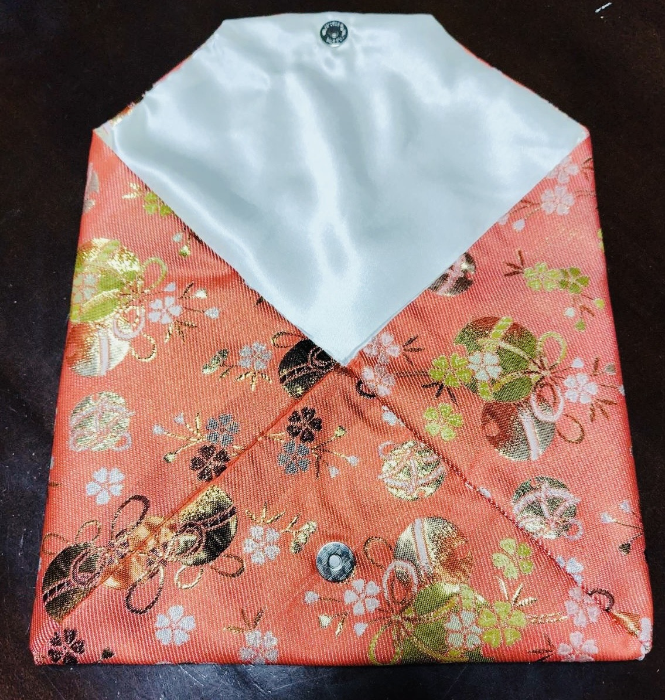
② 地域発の国際ブランド
- 新潟から世界に発信できる
- 海外ゲストや国際誌での注目も受けやすい
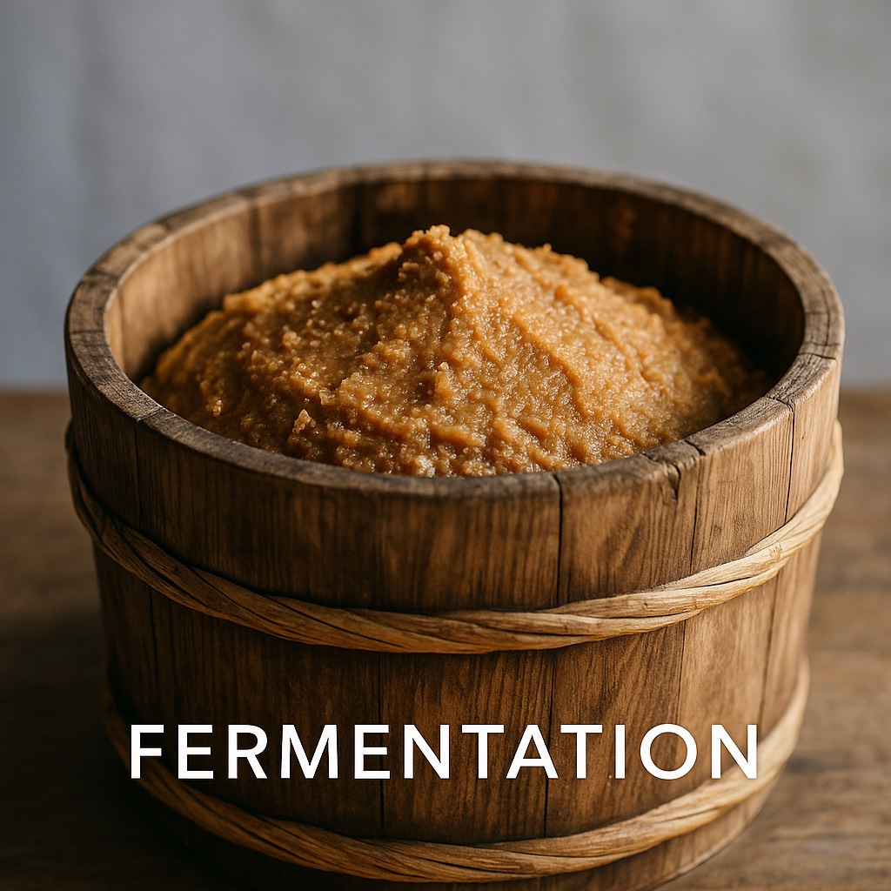
③ 独自の体験価値
- 古民家 × 国際評価 × 研究裏付け × オリジナル施術
- 県内外、国内外の人々を惹きつけるストーリー性
- 科学的裏付けと独自体験で路面店・一般スクールとは明確に差別化
- 「地域唯一」だからこそ、全国・海外展開の基盤にもなる
- 日本全国を見渡しても、FLA®の「科学的裏付け × 体験型施術・研究・ブランド統合プログラム」はまだ存在していません
- 海外ゲスト・国際発信も視野に入る
④ 地域ごとのカスタマイズ
- 古民家、文化体験、食・発酵・茶道・音楽・ヨガなど地域資源を活かせる
- 科学的裏付けのプログラムはどの地域でも統一ブランドとして提供可能
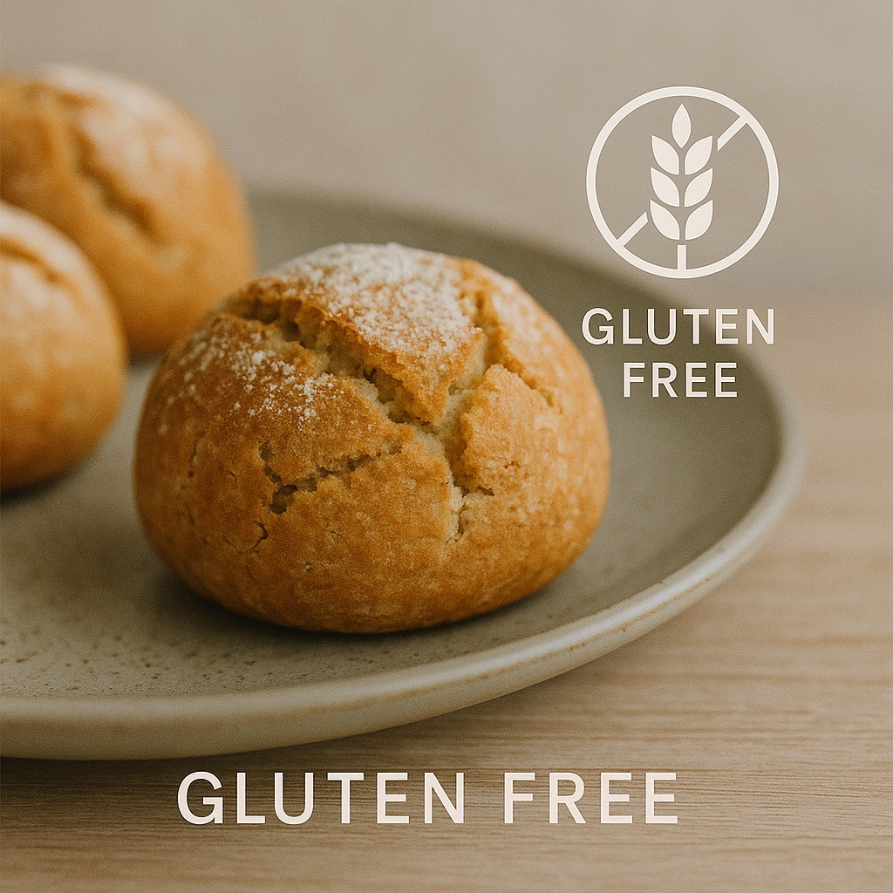
サービス詳細
水泳（非侵襲的アクアムーブメントケア）
水中環境の特性を活かした低負荷・非衝撃性の水泳を通じて、循環・呼吸・感覚・自律神経に配慮した補完的生活ケア・教育プログラムです。
競技・訓練・治療・リハビリを目的とせず、安全性と再現性を重視した水中運動教育として提供します。
安全性・倫理的配慮（重要）
- 医療行為・リハビリではない
- 疾患改善・機能回復を保証しない
- 訓練・競技指導を目的としない
- 非侵襲・低負荷・自己調整優先
- 体調不良時は即中止
必要に応じて医療機関受診・主治医相談を最優先とします。
資格
- 公益財団法人 日本スポーツ協会（JSPO）公認ジュニアスポーツ指導員（水泳）
- 公益財団法人 日本スポーツ協会（JSPO）公認スポーツ指導者水泳コーチ1
- 公益財団法人 日本水泳連盟公認水泳指導員
※ 治療・リハビリ・処方とは接続しない
タラソモデリング（海洋資源活用型 補完ケア）
主体は「海洋ミネラルによる外的刺激」
タラソモデリングは海藻・海泥・海水由来ミネラルを皮膚を介した外用刺激として用います。
- 内服・治療ではない
- 外的環境刺激型ケア
皮膚・温度・包覆による感覚反応
モデリング（包む・温める）工程により：
- 触覚・温感・圧覚が同時に作用し、感覚神経と循環感覚に影響を与えます
循環「促進」ではなく循環「サポート」
血流改善を謳わない、デトックスを断定しない「循環を意識しやすい感覚環境をつくる」という立ち位置。
発酵・味噌教室
本教室は、日本の伝統的発酵食品である味噌を、単なる食文化ではなく、腸内環境・免疫・代謝・神経系（腸脳相関）の観点から学ぶ予防ケア、生活習慣ケアを目的とした発酵教育プログラムです。
発酵の科学的理解と、日常生活への安全な実装を重視し、非侵襲・自己管理型の補完的ケアとして位置づけています。
本教室のスタンス（重要）
- 診断・治療・治癒を目的としない
- 特定疾患の改善を保証しない
- 医療を補完する生活基盤の教育
- 科学的理解と文化的叡智の統合
医療・研究・教育分野との橋渡し的プログラムとして設計されています。
医療・生理学的背景
腸内環境と免疫調整
味噌に含まれる乳酸菌（死菌含む）・麹由来の酵素・発酵ペプチドは、腸内細菌叢（マイクロバイオータ）を介して：
- 粘膜免疫の調整
- 炎症性サイトカインの過剰反応抑制
- アレルギー傾向の緩和
※本教室では治療を目的とせず、生活環境の土台づくりとして扱います。
腸脳相関（Gut–Brain Axis）
腸は「第二の脳」と呼ばれ、自律神経・ホルモン・感情調整と密接に関連します。
発酵食品の継続的摂取は：
- 自律神経バランス
- 睡眠の質
- ストレス耐性
に影響を与える可能性があり、本教室では感覚（味・香り）と神経反応の関連も丁寧に扱います。
代謝・血糖・栄養吸収
発酵により：
- アミノ酸の生体利用率向上
- ミネラル吸収効率の改善
- 食後血糖変動の緩和
が期待され、加齢・ホルモン変化・生活リズムの乱れに配慮した食設計として学びます。
教室内容
理論パート
- 発酵の基礎科学（微生物・酵素・pH）
- 味噌の種類と菌相の違い
- 食品安全（衛生・保存・発酵管理）
実践パート
- 科学的視点での味噌仕込み（温度・塩分・発酵環境）
- 体調・季節・体質に応じた配合設計
- 発酵中の観察ポイント（異常発酵の見分け方）
珈琲豆焙煎
嗅覚・味覚・神経反応を扱う感覚ベースの補完的要素
珈琲を嗜好品としてではなく、中枢神経・自律神経・消化管・感覚刺激への影響を考慮した品質管理型・感覚配慮型の焙煎珈琲提供を目的としています。
過度な刺激や依存を助長するものではなく、生活リズム・集中・休息の質を支える補完的要素として位置づけます。
カフェインと中枢神経
カフェインは覚醒・注意力・反応速度に影響を与える一方、摂取量・個体差によっては：
- 動悸・不安感・睡眠障害を引き起こす可能性があります
本事業では焙煎度・抽出特性・提供量に配慮し、神経刺激が過剰にならない設計思想を重視します。
焙煎と消化・胃腸刺激
浅煎り～深煎りによって酸味成分・苦味成分・クロロゲン酸量が変化し、胃腸への刺激性にも差が生じます。
本焙煎では胃部不快感・空腹時刺激・胸やけへの配慮を含め、身体反応を考慮した焙煎プロファイルを採用します。
香りと自律神経反応
珈琲の香気成分は嗅覚を介して情動・記憶・自律神経に影響を与えることが知られています。
本事業では香りを「感覚刺激」として扱い、過剰覚醒ではなく穏やかな集中・切り替えを意図した設計を行います。
焙煎・販売における専門的配慮
- 焙煎度による刺激性の違いを理解
- 均一性・再現性を重視
- 焦げ由来成分の過剰生成を避ける管理
ボタニカルオイルヨガ
感覚神経配慮型ムーブメントケア - 補完的セルフケア教育プログラム
植物由来芳香成分による嗅覚刺激と、皮膚への穏やかな手技刺激を組み合わせ、感覚入力を介して身体感覚および心理状態に間接的に関与する、非侵襲的な感覚調整型補完ケアである。
本プログラムのスタンス
- 医療行為・治療・診断を目的としない
- 非侵襲的な感覚神経調整を目的とする補完ケア
※心理療法的介入や情動誘導は行わず、受動的・支持的ケアとして位置づける。
嗅覚刺激
精油に含まれる揮発性植物化合物が嗅覚経路を介し、中枢神経系および自律神経活動に関与する可能性
触覚・圧刺激
- 皮膚および浅層組織への手技刺激による体性感覚入力
- 筋緊張・呼吸パターンへの間接的関与
- 薬理作用を標榜せず感覚神経経路を介した非侵襲的関与
神経・心理的側面
- 身体認識（Body Awareness）の向上
- 緊張状態の知覚変化
- 安心感・主観的快の支持
- 注意の内向化・安定
茶の湯
文化感覚統合型補完ケア - 儀式化感覚統合プログラム
茶の湯は、五感刺激と文化的ライフスタイル介入を基盤とし、生理的リラクゼーションと注意調整を促す、非医療的・非侵襲的アプローチである。
五感統合アプローチ
- 視覚（所作・空間・器）
- 聴覚（湯の音）
- 嗅覚（抹茶・畳）
- 味覚（苦味・旨味）
- 触覚（器の温度・質感）
→ 単一感覚ではなく「感覚統合」
構造化された「型」が神経を整える
茶の湯の「型」は：
- 予測可能性
- 繰り返し
- 穏やかな時間構造を持ち、自律神経の安定・安全感の形成に寄与します
治療ではなく「意味と体験」
「治す・変える」のではなく、「今ここ」に戻る体験、文化的意味づけによる安心感を提供します。
ギャラリー

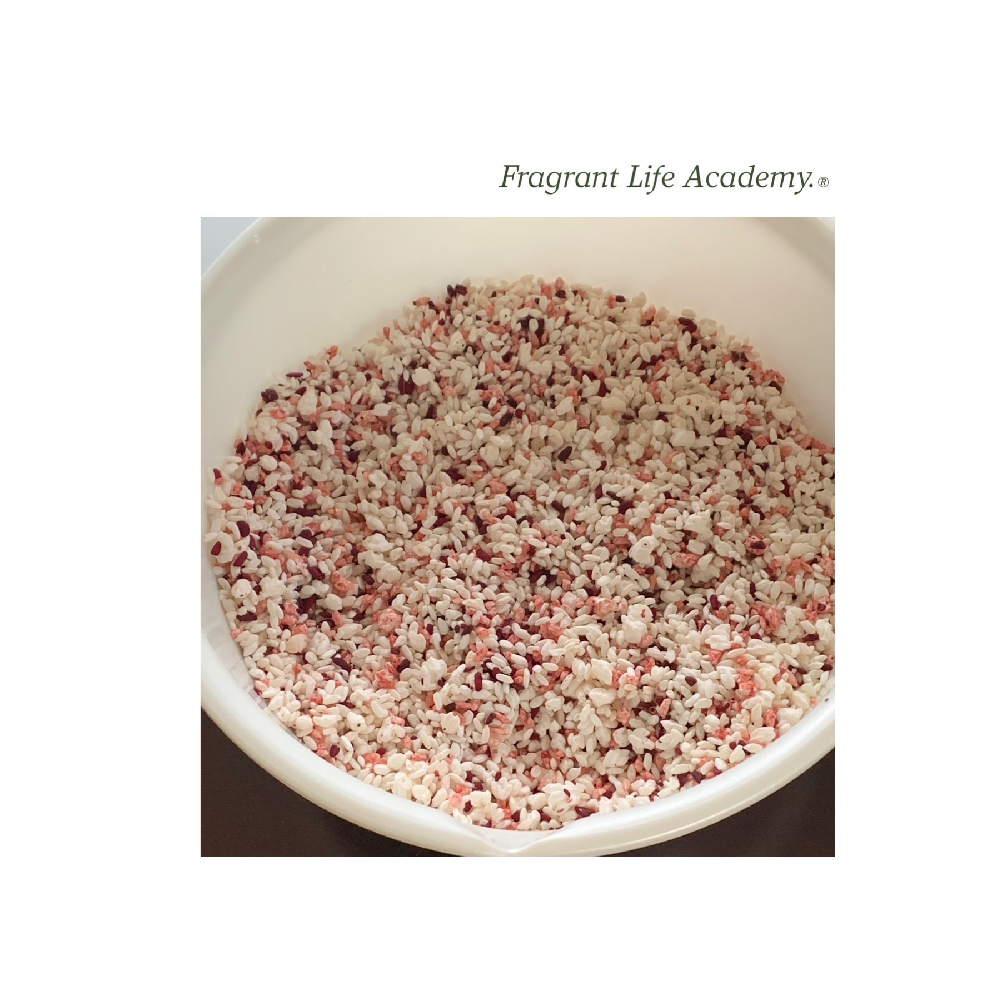
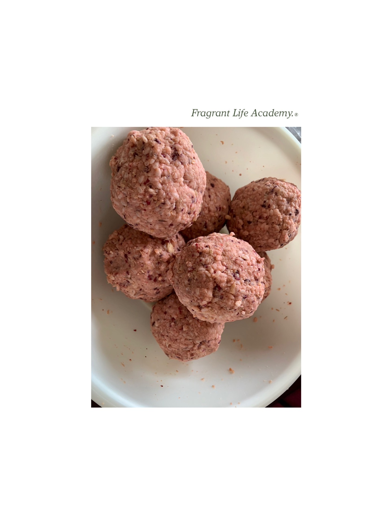
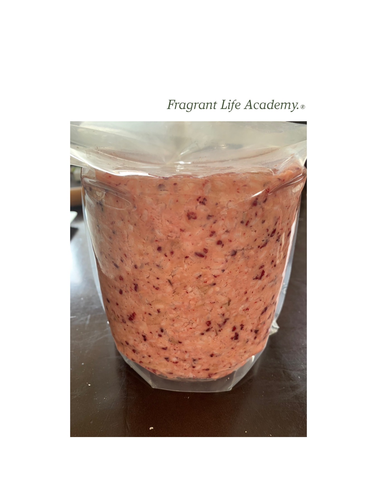
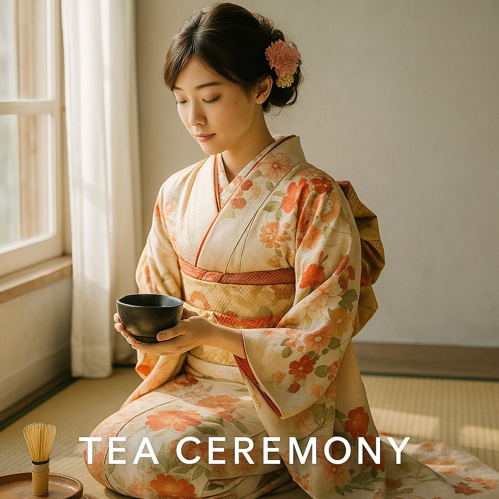
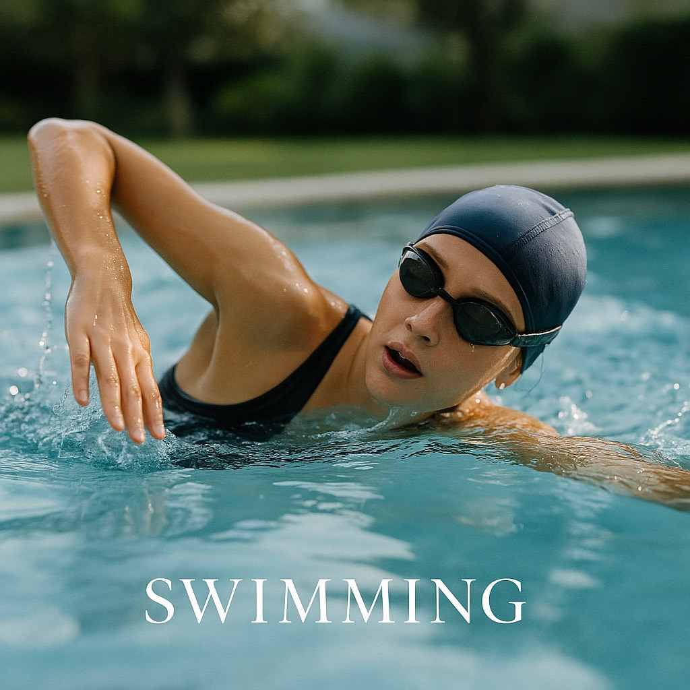
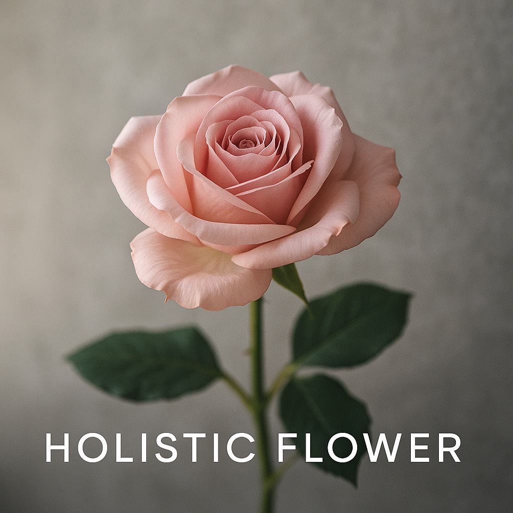
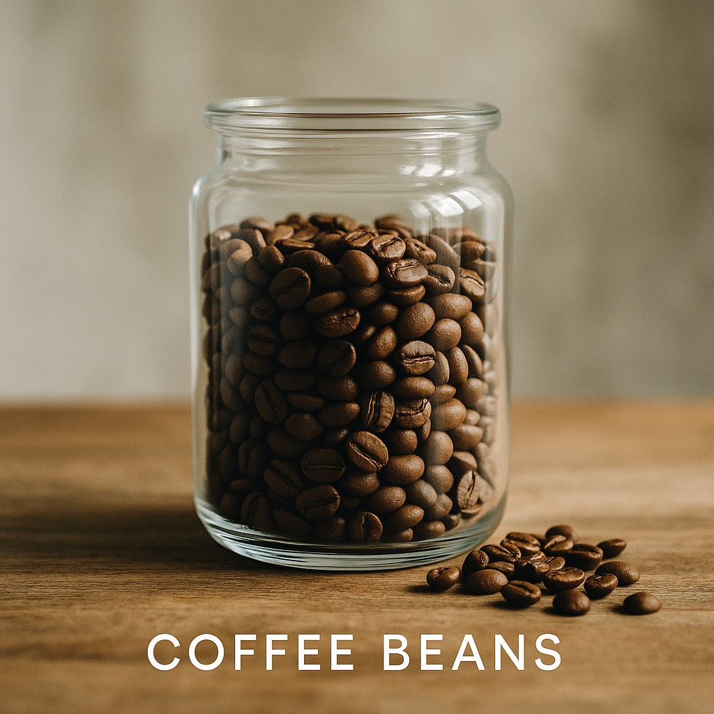
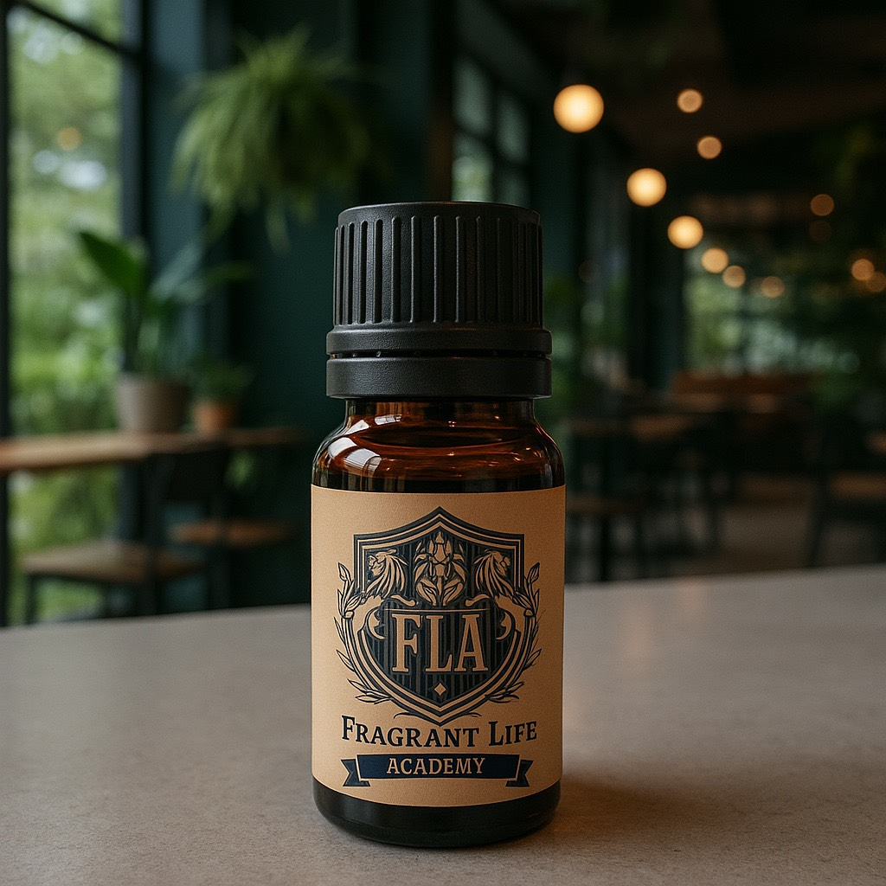